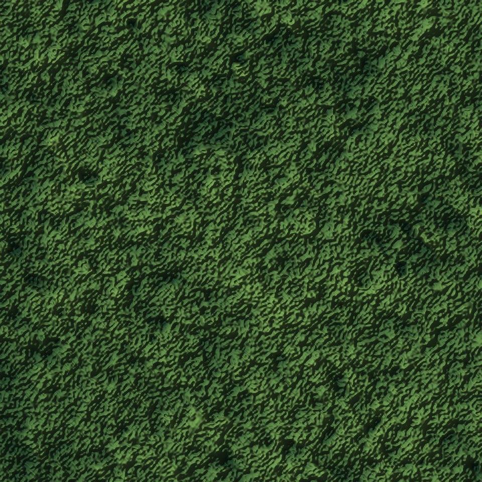
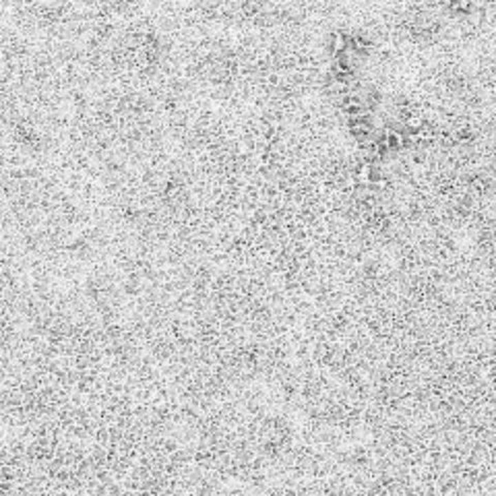

Un laser montato su un aereo riesce a misurare il terreno anche sotto gli alberi. Trascina la linea e togli la foresta.

‹ ›con gli alberisenza alberi
Lo stesso quadrato di 240 metri, misurato dal laser due volte: la cima degli alberi e il terreno sotto. Gli edifici attorno al cortile sono maya e sono già stati segnati dagli archeologi, nei dintorni di Chactún (Campeche). È così che si cerca oggi sotto la giungla.
Cosa ho fatto
Ho fatto leggere a un programma 1.273 km² di foresta
Nel 2013 la NASA ha sorvolato lo Yucatán con un laser come questo e ha reso pubblici i dati: 456 strisce di terreno, larghe circa 400 metri e lunghe qualche chilometro.
Con l'aiuto di assistenti AI ho scritto un programma che le legge una per una e segnala i punti in cui il terreno ha la forma di una costruzione.
11.916punti segnalati in tutto
Le 456 strisce sorvolate dalla NASA. Insieme sono meno dell'1% della penisola. I punti segnalati non sono sulla mappa, e più sotto spiego perché.
Il problema
Una macchina vede forme ovunque
A novembre un ricercatore di Google, Pietro Miotti, ha fatto guardare queste stesse immagini a 48 assistenti AI e ha annunciato un sito maya «non mappato». Gli archeologi lo avevano già pubblicato nel 2025.
Il punto difficile è sapere quanto sbaglia la macchina, e chi aveva già visto quel posto. Per questo ogni passaggio del mio lavoro è misurato.
76%degli edifici segnati dagli archeologi in una zona di prova vengono ritrovati dal programma.
3assistenti AI giudicano ogni immagine al buio, senza sapere dov'è, mescolata a immagini di prova di cui conosco già la risposta.
0volte gli assistenti hanno scambiato un terreno vuoto per un edificio. In compenso sono prudenti: riconoscono solo 3 o 4 edifici veri su 10.
Mettiti alla prova
Tu cosa vedi?
Otto immagini come quelle che giudicano gli assistenti, ognuna di 120 metri di lato. In alcune c'è un edificio maya segnato dagli archeologi, nelle altre solo terreno. Per ognuna, scegli.
1 di 8

0 su 4edifici che hai riconosciuto
0 su 4terreni vuoti che hai lasciato vuoti
Gli assistenti AI, sugli stessi tipi di immagini, hanno riconosciuto 3 o 4 edifici su 10 e non hanno mai indicato un edificio dove non c'era. Per questo il loro sì vale, il loro no meno.
Immagini di prova estratte a sorte dal dataset di Chactún (Kokalj e altri, 2023), dove ogni edificio è stato segnato da archeologi.
Cosa è uscito
40 punti guardati, 15 convincono
Degli 11.916 punti segnalati, finora ne ho fatti giudicare 40. In 15 almeno due assistenti su tre hanno visto una costruzione. Eccoli.
rosso: il terreno sporgeblu: il terreno affonda
Tocca un'immagine per vederla a colori1 / 15
Attenzione
Cosa non vuol dire
Non è una scoperta
Su questi stessi dati un archeologo ha già contato 57.181 strutture. Questi 15 punti, con ogni probabilità, sono già nel suo elenco.
Nessuno è andato a vedere
Sono forme nel terreno misurate da un aereo. Solo un sopralluogo, con i permessi del governo messicano, dice cosa sono.
Non so quanto siano antichi
Né a cosa servissero. Su età, popolo e funzione non dico nulla.
Perché niente mappa
Le posizioni restano private
Una mappa di rovine non scavate è una mappa per i tombaroli. Per questo i punti non sono pubblicati da nessuna parte.
E adesso
Il prossimo passo spetta agli archeologi
Sto chiedendo a chi studia i Maya due cose: confrontare questi punti con i loro elenchi, e fare la stessa prova al buio che hai appena fatto tu. Un esperto che riconosce gli edifici veri può anche dire quali non lo sono.